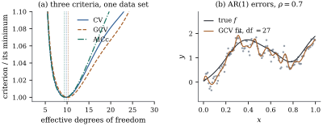

43.5 Choosing the smoothing parameter
Four smoothers have appeared: the local constant and
local linear estimators of Section 43.1, the penalized
spline of Section
43.3 and the smoothing spline of Section 43.4. Each
is linear in
43.5.1. Every smoother here is a linear operator
Call
(a) (Moments.)
(b) (Residuals.)
is unbiased for
(c) (Degrees of freedom.) If
(d) (Shrinkage.) For a penalized spline, Eq. 43.3.2 writes
(e) (Pointwise bands.)
Proof. Linearity is Proposition 43.1.1 for the kernel estimators, Proposition 43.3.2(a) for the penalized spline and Eq. 43.4.2 for the smoothing spline; in each case the matrix is built from the design, the knots and the tuning constant alone.
(a)
(b)
(c) With eigenvalues
(d) is Eq. 43.3.2; for the smoothing spline apply Lemma 43.3.1 with
(e) By (a),
Warning. Part (e) is the most
important caveat in this chapter, and the one most often
ignored. A smoother is deliberately biased;
that is what the penalty buys. The interval above treats
the bias as zero, so where
43.5.2. Three rules
The quantity one would like to minimize is the risk
Eq. 43.5.1, which
involves the unknown
Let
(a) (The leave-one-out shortcut is exact.) For a penalized spline and for a smoothing spline,
(43.5.3)where
(b) (Generalized cross-validation.) Replacing each
which needs only the trace, and satisfies
(c) (Information criteria.) Under normal errors with
which penalizes large
(d) (What they estimate.) If
Proof.
(a) A penalized spline minimizes
(b) The substitution is the definition of GCV; the expansion is
(c) With a normal likelihood and
(d) is Proposition 29.3.1 and Definition 29.1.1, which do not use the form of the estimator.
Idea. All three rules do the same
arithmetic: residual sum of squares, inflated by a
factor that grows with the degrees of freedom —
43.5.3. What they do in practice
Take
Over
Warning (Three small-sample
failures). A flat criterion.
Near the minimum, GCV can change by a fraction of a per
cent over a factor of two in
Interpolation. Since
Correlated errors. All three
estimate prediction error at a new, independent
response. If the errors are serially correlated, a
wiggly fit predicts its neighbours well without
describing

import numpy as np
def f_true(x):
"""The mean function of Section 43.1."""
return 2 * x + np.exp(-25 * (x - 0.35) ** 2) - 0.75 * np.exp(-50 * (x - 0.80) ** 2)
def uniform_knots(a, b, K, d):
"""K interior knots equally spaced in (a, b), continued d further steps at each end."""
delta = (b - a) / (K + 1)
return a + delta * np.arange(-d, K + 2 + d)
def bspline_basis(x, kn, d):
"""The B-splines of degree d on the knot vector kn, by the de Boor recurrence."""
x = np.atleast_1d(np.asarray(x, float))
B = np.array([(x >= kn[j]) & (x < kn[j + 1]) for j in range(len(kn) - 1)], float).T
last = np.max(np.nonzero(kn[:-1] < kn[1:])[0])
B[x == kn[-1], last] = 1.0
for deg in range(1, d + 1):
C = np.zeros((len(x), B.shape[1] - 1))
for j in range(C.shape[1]):
if kn[j + deg] > kn[j]:
C[:, j] += (x - kn[j]) / (kn[j + deg] - kn[j]) * B[:, j]
if kn[j + deg + 1] > kn[j + 1]:
C[:, j] += (kn[j + deg + 1] - x) / (kn[j + deg + 1] - kn[j + 1]) * B[:, j + 1]
B = C
return B
def smoother(B, P, lam):
"""The smoother matrix of the penalized fit with basis B and penalty matrix P."""
return B @ np.linalg.solve(B.T @ B + lam * P, B.T)
def criteria(B, P, y, lam):
"""Leave-one-out CV by the leverage shortcut, GCV, and the corrected AIC."""
n = len(y)
S = smoother(B, P, lam)
resid = y - S @ y
df = np.trace(S)
cv = np.mean((resid / (1 - np.diag(S))) ** 2)
gcv = np.mean(resid**2) / (1 - df / n) ** 2
aicc = np.log(np.mean(resid**2)) + 1 + 2 * (df + 1) / (n - df - 2)
return df, cv, gcv, aicc
n, sigma, K, d, k = 120, 0.25, 25, 3, 2
x = (np.arange(1, n + 1) - 0.5) / n
kn = uniform_knots(0.0, 1.0, K, d)
B = bspline_basis(x, kn, d)
Dk = np.diff(np.eye(B.shape[1]), n=k, axis=0)
P = Dk.T @ Dk
rng = np.random.default_rng(4343)
y = f_true(x) + sigma * rng.normal(size=n)
lams = np.geomspace(1e-9, 1e3, 121)
table = np.array([criteria(B, P, y, lam) for lam in lams])
dfs, cvs, gcvs, aiccs = table.T
pick = {"CV": lams[np.argmin(cvs)], "GCV": lams[np.argmin(gcvs)], "AICc": lams[np.argmin(aiccs)]}
df_pick = {name: criteria(B, P, y, lam)[0] for name, lam in pick.items()}
print("degrees of freedom chosen:", {k_: round(v, 2) for k_, v in df_pick.items()})43.5.4. After the choice
Remark (Inference after selecting the
smoothing parameter). Every interval, test and
standard error in this chapter is computed as
if
The effect is modest when the criterion has a
well-determined minimum, which is why the practice
survives, and large when it does not. The defences are
those of Chapter
29: hold out data, bootstrap the whole procedure
including the selection of
43.5.5. Exercises
A. Check your understanding
For the projection onto a
B. Practice
Using the cell above, verify Eq. 43.5.3 against
Show that
Solution. The first identity is
immediate from Eq. 43.5.4. Expanding,
C. Going deeper
GCV was introduced by Craven and Wahba (1979) as a
version of cross-validation invariant to rotation. Show
that if
Solution. Under the substitution,
the residual vector becomes
For the simulation of Example (The three criteria on one data set, and over 200 of them),
record for each replicate the set of